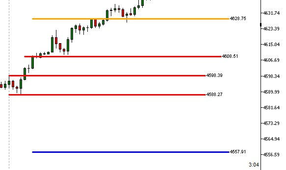

market trading

Desenvolvido para traders que operam no mercado de Forex com técnicas baseadas em “opening range breakout (ORB)”. Esse é um robô indicador que desenha as melhores oportunidades de negociação. Faça o download gratuito do robô e do manual no botão abaixo:
Robô+manualCom base em técnicas como "opening range breakout (ORB)", o robô desenha com precisâo regiões de acumulação do preço. Ele marca os melhores preços para execução da ordem de compra/venda.
A técnia ORB já era utilizada em negociações do mercado muito antes de existir o gráfico de candles, e ela veio sendo aperfeiçoada por traders experientes ao longo dos anos. Sabendo que tradição e experiência estão lado a lado nesse operacional, nos sentimos seguros para dizer que os sinais do robô tem uma assertividade acima da média.
Um dos problemas que buscamos solucionar ao automatizar essa técnica é eliminar ao máximo qualquer subjetividade do operacional do trader. Com a WS isso é possível, pois o nosso robô te mostra os melhores preços com base num padrão lógico.
Visualize quantos min/seg falta para a próxima vela. Isso faz total diferença para executar a ordem nos últimos segundos, evitando pegar um ‘GAP’ da abertura do candle.
Faça o download do robô no nosso site. Ele acompanha um manual de instruções detalhado.
Abra o robô no MT5, no computador que você vai utilizar.
Ao iniciar o robô você será direcionado para uma página para validar o uso no seu computador.
A validação é feita por máquina/computador, ou seja, ao liberar o robô vc só consegue utilizá-lo ná máquina em que foi instalado pela primeira vez.
contato.wealthscope@gmail.com